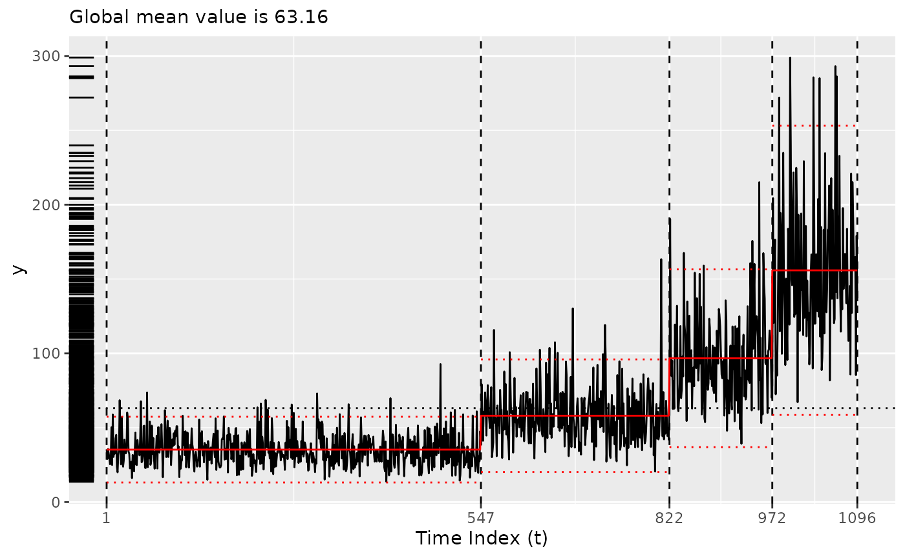

tidychangepoint
tidychangepoint.RmdTidy methods for changepoint analysis
The tidychangepoint package allows you to use any number
of algorithms for detecting changepoint sets in univariate time series
with a common, tidyverse-compliant interface. It also
provides model-fitting procedures for commonly-used parametric models,
tools for computing various penalty functions, and graphical diagnostic
displays.
Changepoint sets are computed using the segment()
function, which takes a numeric vector that is coercible into a
ts object, and a string indicating the algorithm you wish
you use. segment() always returns a tidycpt
object.
Various methods are available for tidycpt objects. For
example, as.ts() returns the original data as
ts object, and changepoints() returns the set
of changepoint indices.
changepoints(x)
#> [1] 547 822 972Retrieving information using the broom interface
tidychangepoint follows the design interface of the
broom package. Therefore, augment(),
tidy() and glance() methods exists for
tidycpt objects.
-
augment()returns atsibblethat is grouped according to the regions defined by the changepoint set.
augment(x)
#> Registered S3 method overwritten by 'tsibble':
#> method from
#> as_tibble.grouped_df dplyr
#> # A tsibble: 1,096 x 5 [1]
#> # Groups: region [4]
#> index y region .fitted .resid
#> <int> <dbl> <fct> <dbl> <dbl>
#> 1 1 35.5 [0,547) 35.3 0.232
#> 2 2 29.0 [0,547) 35.3 -6.27
#> 3 3 35.6 [0,547) 35.3 0.357
#> 4 4 33.0 [0,547) 35.3 -2.29
#> 5 5 29.5 [0,547) 35.3 -5.74
#> 6 6 25.4 [0,547) 35.3 -9.87
#> 7 7 28.8 [0,547) 35.3 -6.45
#> 8 8 50.3 [0,547) 35.3 15.0
#> 9 9 24.9 [0,547) 35.3 -10.3
#> 10 10 58.9 [0,547) 35.3 23.6
#> # ℹ 1,086 more rows-
tidy()returns atblthat provides summary statistics for each region. These include any parameters that were fit, which are prefixed in the output byparam_.
tidy(x)
#> # A tibble: 4 × 10
#> region num_obs min max mean sd begin end param_mu param_sigma_hatsq
#> <chr> <int> <dbl> <dbl> <dbl> <dbl> <dbl> <dbl> <dbl> <dbl>
#> 1 [0,547) 546 13.7 92.8 35.3 11.3 0 547 35.3 127.
#> 2 [547,8… 275 20.5 163. 58.1 19.3 547 822 58.1 372.
#> 3 [822,9… 150 39.2 215. 96.7 30.5 822 972 96.7 924.
#> 4 [972,1… 125 67.2 299. 156. 49.6 972 1096 156. 2442.-
glance()returns atblthat provides summary statistics for the algorithm. This includes thefitness, which is the value of the penalized objective function that was used.
glance(x)
#> # A tibble: 1 × 8
#> pkg version algorithm seg_params model_name criteria fitness elapsed_time
#> <chr> <pckg_> <chr> <list> <chr> <chr> <dbl> <drtn>
#> 1 changep… 2.3 PELT <list [1]> meanvar MBIC 9403. 0.064 secsOther methods
The plot() method leverages ggplot2 to
provide an informative plot, with the regions defined by the changepoint
set clearly demarcated, and the means within each region also
indicated.
plot(x)
Other generic functions defined for tidycpt objects
include fitness(), as.model(), and
exceedances(). For example, fitness() returns
a named vector with the value of the penalized objective function
used.
fitness(x)
#> MBIC
#> 9403.391Structure
Every tidycpt objects contains two main children:
-
segmenter: The object that results from the changepoint detection algorithm. These can be of any class. Methods for objects of classcpt,ga, andwbsare currently implemented, and as well asseg_basket(the default internal class). Given a data set, a model, and a penalized objective function, a segmenter’s job is to search the exponentially-large space of possible changepoint sets for the one that optimizes the penalized objective function (over the space of possible changepoint sets). Some segmenting algorithms (e.g., PELT) are deterministic, while others (e.g., genetic algorithms) are randomized. -
model: A model object inheriting frommod_cpt, an internal class for representing model objects. Model objects are created by model-fitting functions, all of whose names start withfit_. Themodelof atidycptobject is the model object returned by thefit_*()function that corresponds to the one used by thesegmenter. Given a data set, a model description, and a set of changepoints, the corresponding model-fitting function finds the values of the model parameters that optimize the model fit to the data.
Both segmenters and models implement methods for the
generic functions changepoints(), as.ts(),
nobs(), logLik(), model_name(),
and glance(). However, it is important to note that while
tidychangepoint does its best to match the model used by
the segmenter to its corresponding model-fitting function,
exact matches do not always exist. Thus, the logLik() of
the segmenter may not always match the
logLik() of the model. Nevertheless, squaring
these values is the focus of ongoing work.
Segmenters
In the example above, the segmenter is of class
cpt, because segment() simply wraps the
cpt.meanvar() function from the changepoint
package.
x |>
as.segmenter() |>
str()
#> Formal class 'cpt' [package "changepoint"] with 12 slots
#> ..@ data.set : Time-Series [1:1096] from 1 to 1096: 35.5 29 35.6 33 29.5 ...
#> ..@ cpttype : chr "mean and variance"
#> ..@ method : chr "PELT"
#> ..@ test.stat: chr "Normal"
#> ..@ pen.type : chr "MBIC"
#> ..@ pen.value: num 28
#> ..@ minseglen: num 2
#> ..@ cpts : int [1:4] 547 822 972 1096
#> ..@ ncpts.max: num Inf
#> ..@ param.est:List of 2
#> .. ..$ mean : num [1:4] 35.3 58.2 96.8 156.5
#> .. ..$ variance: num [1:4] 127 371 921 2406
#> ..@ date : chr "Fri Jan 10 14:47:09 2025"
#> ..@ version : chr "2.3"In addition to the generic functions listed above,
segmenters implement methods for the generic functions
fitness(), model_args(), and
seg_params().
Models
The model object in this case is created by
fit_meanvar(), and is of class mod_cpt.
x |>
as.model() |>
str()
#> List of 6
#> $ data : Time-Series [1:1096] from 1 to 1096: 35.5 29 35.6 33 29.5 ...
#> $ tau : int [1:3] 547 822 972
#> $ region_params: tibble [4 × 3] (S3: tbl_df/tbl/data.frame)
#> ..$ region : chr [1:4] "[0,547)" "[547,822)" "[822,972)" "[972,1.1e+03]"
#> ..$ param_mu : num [1:4] 35.3 58.1 96.7 155.9
#> ..$ param_sigma_hatsq: Named num [1:4] 127 372 924 2442
#> .. ..- attr(*, "names")= chr [1:4] "[0,547)" "[547,822)" "[822,972)" "[972,1.1e+03]"
#> $ model_params : NULL
#> $ fitted_values: num [1:1096] 35.3 35.3 35.3 35.3 35.3 ...
#> $ model_name : chr "meanvar"
#> - attr(*, "class")= chr "mod_cpt"In addition to the generic functions listed above,
models implement methods for the generic functions
fitted(), residuals(), coef(),
augment(), tidy(), and
plot().